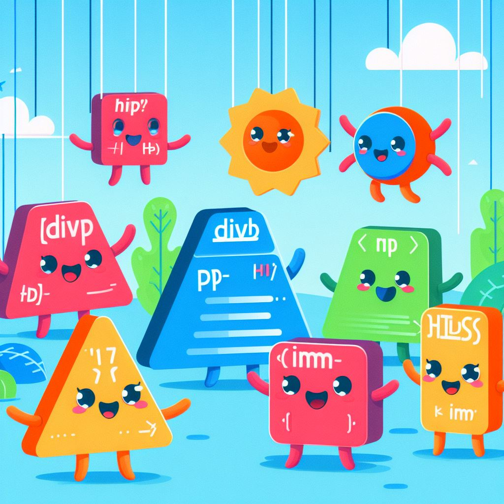

Descubre cómo una buena nutrición impacta en tu salud y bienestar diario.
Beneficios de una alimentación saludable
Una dieta equilibrada ayuda a mantener un peso adecuado, reduce el riesgo de enfermedades crónicas como la diabetes o hipertensión, y mejora el estado de ánimo y los niveles de energía.
Consejos para mejorar tu alimentación

Incluye frutas y verduras en cada comida.
Elige cereales integrales sobre los refinados.
Reduce el consumo de azúcar y alimentos ultraprocesados.
Hidrátate adecuadamente, preferiblemente con agua.